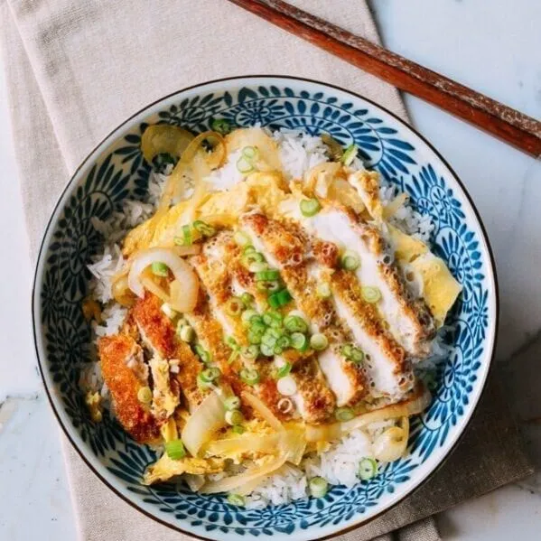

Katsudon

What is a delicious Katsudon ?
Katsudon is a popular Japanese dish consisting of a breaded, deep-fried pork cutlet (tonkatsu) served with a sweet and savory sauce over a bowl of rice. The crispy tonkatsu is typically simmered with onions, egg, and a flavorful broth made from dashi (Japanese stock), soy sauce, and mirin (sweet rice wine). Katsudon is often garnished with sliced green onions and served with a side of pickled ginger. It's loved for its satisfying combination of crispy, tender pork, savory sauce, and fluffy rice, making it a comforting and filling meal option in Japanese cuisine.
Ingredients
- 4 pork loin chops, boneless, about 1/2-inch thick
- 1/2 cup all-purpose flour
- 2 large eggs, beaten
- 1 cup panko breadcrumbs
- Salt and pepper to taste
- 4 cups cooked Japanese short-grain rice
- 1 onion, thinly sliced
- 2 cups dashi (Japanese soup stock)
- 4 tablespoons soy sauce
- 4 tablespoons mirin (Japanese sweet rice wine)
- 2 tablespoons sugar
- 4 large eggs
- Sliced green onions, for garnish
Steps
- Season the pork chops with salt and pepper.
- Set up a breading station: Place flour, beaten eggs, and panko breadcrumbs in three separate shallow dishes.
- Dredge each pork chop in flour, then dip in beaten eggs, and coat with panko breadcrumbs.
- Heat oil in a large skillet over medium-high heat. Fry the pork chops until golden brown and cooked through, about 5 minutes per side. Remove from skillet and drain on paper towels.
- In the same skillet, add sliced onions and cook until softened.
- Combine dashi, soy sauce, mirin, and sugar in a bowl to make the sauce. Pour the sauce into the skillet with the onions and bring to a simmer.
- Cut the fried pork chops into strips and add them to the skillet, simmering in the sauce.
- Beat the eggs in a bowl and pour evenly over the pork chops in the skillet. Cover and cook until the eggs are set, about 3-4 minutes.
- Divide cooked rice into bowls and top with the katsudon mixture. Garnish with sliced green onions.
- Serve hot and enjoy your delicious homemade katsudon!